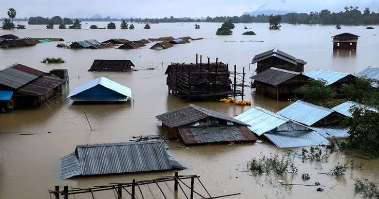
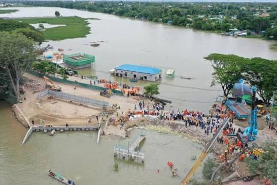
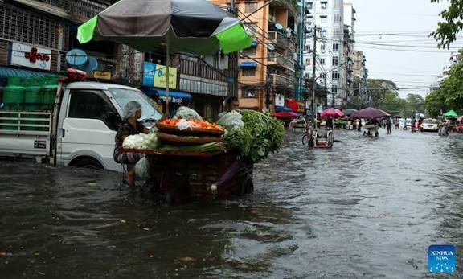
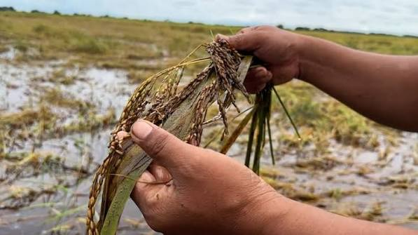
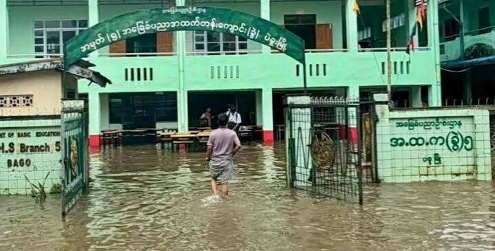

Solutions for Every Issue, A Better Future for All
Every issue has a solution; with the right approach, determination, and teamwork, we can turn every challenge into an opportunity for positive change.

Heavy Rain during the monsoon season
Mostly, floods happen in rural areas near rivers and streams that can easily overflow. Especially in Ayeyarwade Region, Western Bago Region, Sagaing Region, Rakhine Region, and Yangon Region. (Should focus on Ayeyarwade Region because it's currently happening)

Embankment failures
Embankment and dike failures in Myanmar are primarily driven by prolonged heavy monsoon rains, deforestation, lack of maintenance, and substandard construction materials.

Poor drainage
In some towns and cities, blocked or insufficient drainage makes flooding worse.

Homes and villages are flooded
Heavy rainfall and riverbank embankment breaches can flood houses and force families to evacuate. In August 2026, flooding in Laymyethna Township affected thousands of households.

Farmers lose their crops
Floodwater can destroy rice fields, damage seedlings, and cover farmland with mud and debris. This reduces farmers' income and can affect the food supply.

Roads and schools are damaged
Floods can damage roads, bridges, and school buildings, making it difficult for children to attend school and for families to travel.